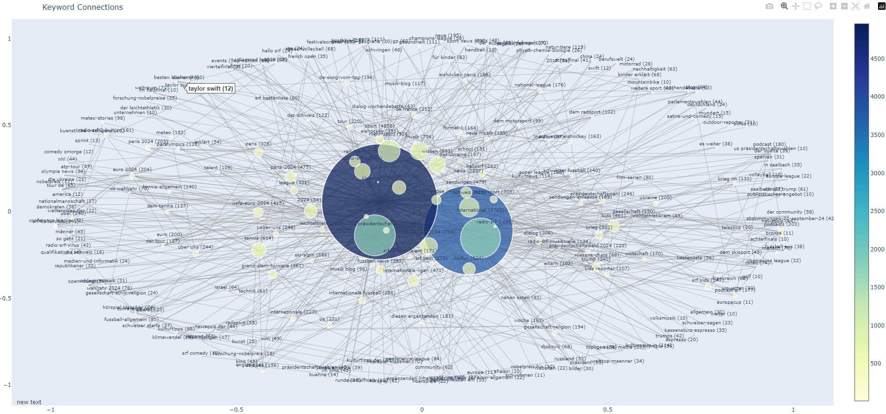
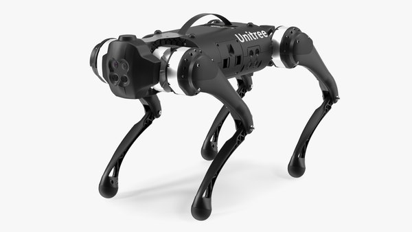

Data Mining SRF
Python • Data Analysis • Web Scraping • Docker
This is my first data mining project where I extracted data from www.srf.ch, a Swiss news site, and then systematically analyzed the data. I was interested in publication time of articles, attention on certain subjects over time, releasing frequency and release timing of certain authors. Also I was interested in possible biases of the publisher concerning specific subjects. I gathered the relevant HTML files with a script on my Raspberry Pi which reached out once per day. This was inspired by David Kriesel's "Reversing Spiegel-Online".

Human-Robot Interaction with Unitree Go1
ROS2 • Python • YOLOv8 • MediaPipe • Vosk • Docker
A comprehensive Human-Robot Interaction system for the Unitree Go1 quadruped robot developed in the HRI module at HSLU. The system enables natural multimodal interaction through hand gestures, voice commands, and visual person tracking. The robot can follow a designated person, respond to voice commands, and perform various poses using an advanced ROS2 node architecture with sensor fusion.

Database Decision Support System
MongoDB • SQL • Python • Data Analysis
This is a project which provides decision support on the basis of data. The user is supported in their decision-making process with underlying MongoDB and SQL databases. This project was aimed at helping football clubs find optimal new signings, game analysis of opponents and tactics. It demonstrates the power of combining different database technologies for complex analytical queries.

Distributed Logging System
Java • TCP/IP • Distributed Systems • Docker
This project was done in the context of the module VSK (distributed systems) at HSLU. The project is a distributed logging system which enables logging via TCP from multiple clients to a central server. It also includes a logger viewer which allows for a visual representation of the logged data at the server. The system demonstrates key concepts of distributed computing including network protocols, concurrent processing, and data aggregation.